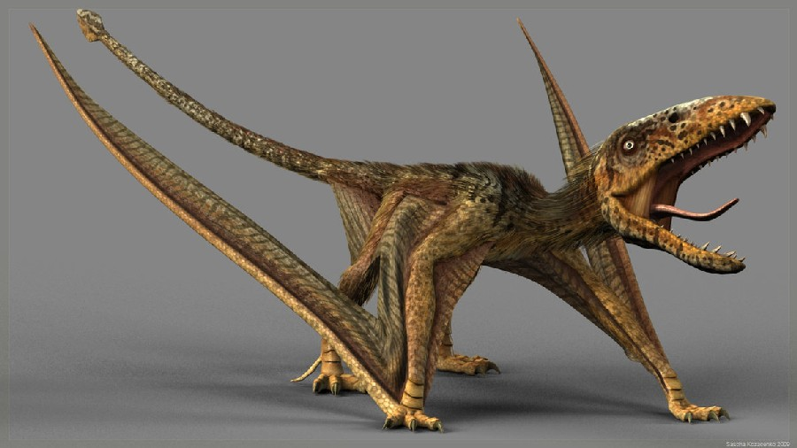

Dimorphodon
Back to home page

Dino Data
Wing span :1.7 feet
Lenght : 3.3 feet
Weight : 2 kg
Diet : insects
Play Sound
Interesting facts about Dimorphodon
- Dimorphodon was a pterosaur, a type of flying reptile. It was not a dinosaur, though it lived during the same period.
- The first Dimorphodon fossil was discovered in 1859.
- Dimorphodon lived during the Early Jurassic and resided in Europe.
- 3 different specimens have been found by paleontologists